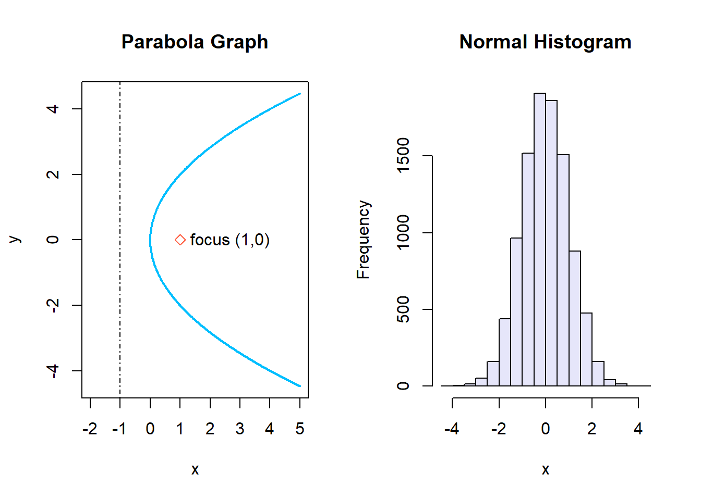

source("prog.r")3 Basic Programming
This lecture introduces a set of basic programming constructs, which are the building blocks of most programs.
Some of these tools are used by practically all programming languages, for example, conditional execution by if statements, and looped execution by for and while statements.
Notice that code that seems to be efficient in another language may not be efficient in R. For example, R is known to be quite slow in computing for and while loops. On the other hand, R is fast in doing vector-based operations.
A program or script is just a list of commands, which are executed one after the other. A program is usually composed by three parts:
Input
Computations
Output
Usually, we write the list of commands in separate files, called scripts, which we can save on our hard drive.
Suppose we have a program saved as prog.r in the working directory (recall the getwd and setwd functions). In order to run or execute the program use the command:
3.1 The if statement
It is often useful to choose the execution of some or other part of a program to depend on a condition. The if function has the form:
if (logical_expression) {
expression_1 #code to run if logical_expression is TRUE
...
}A natural extension of the if command includes an else part:
if (logical_expression) {
expression_1
...
} else {
expression_2
...
}When an if expression is evaluated, if logical_expression is TRUE then the first group of expressions is executed and the second group of expressions is not executed. Conversely, if logical_expression is FALSE then only the second group of expressions is executed.
Example:
Note: be careful with the use of the curly brackets {}!
3.1.1 Small Exercise
- Generate a random number from a standard Gaussian distribution.
-
If the number is negative, then compute the square of it and print the value of
x*along with the output, e.g., “the value of x is _ and its square is _” (Hint: use the*catfunction). -
Otherwise, compute the cube and print the value of
xalong with the output.
Solution:
3.1.2 Nested if statements
Nested if statements are constructed using the else if command:
if (logical_expression_1) {
expression_1 # code to run if logical_expression_1 is TRUE
...
} else if (logical_expression_2) {
expression_2 # code to run if logical_expression_1 is FALSE and logical_expression_2 is TRUE
...
} else if (logical_expression_2) {
expression_3 # code to run if logical_expression_1 is FALSE and logical_expression_2 is FALSE and logical_expression_3 is TRUE
...
} else {
expression_4 # code to run if all logicals are FALSE
}Example:
3.1.3 An extension to the exercise solution above
Extending the code from above to also include a nested else if such that it includes an action for the event of a non-negative value of x.
dX <- rnorm(1) # random number from the Gaussian distribution
if (dX < 0) {
cat("the value of x is ", dX, " and its square is ", dX^2)
} else if (dX >= 0) {
cat("x is non-negative, taking the value ", dX, " and its square is ", dX^2)
} # Note the tautological nature of the logical expression in the else if part...
#> x is non-negative, taking the value 0.4157251 and its square is 0.1728273
3.2 The for loop
The for command has the following form, where x is a simple variable and vector is a vector.
for (x in vector) {
expression_1
...
}When executed, the for command executes the group of expressions within the braces {} once for each element of vector:
for (iX in 1:50) {
print(iX)
}Note that vector can also be a list.
Example:
vX <- seq(1, 9, by = 2)
dSum_x <- 0
for (iX in vX) {
dSum_x <- dSum_x + iX
cat("The current loop element is ", iX, "\n")
cat("The cumulative total is ", dSum_x, "\n")
}
#> The current loop element is 1
#> The cumulative total is 1
#> The current loop element is 3
#> The cumulative total is 4
#> The current loop element is 5
#> The cumulative total is 9
#> The current loop element is 7
#> The cumulative total is 16
#> The current loop element is 9
#> The cumulative total is 25
sum(vX)
#> [1] 25
cumsum(vX)
#> [1] 1 4 9 16 253.2.1 Exercise: a combination of for loops and if conditions
-
Within a
forloop, that runs from 1 to 100, generate a standard normal random variable. - For each draw, check whether it is positive or negative.
- Calculate the fraction of the positive and negative realizations.
- Store the simulated variables in a vector
Solution:
iPos <- 0
iNeg <- 0 # This integer is technically redundant, as the knowledge of the positive values and the total sum allows us to infer the negative values...
vSimVals <- vector()
for (iX in 1:100) {
dX <- rnorm(1)
if (dX > 0) {
iPos <- iPos + 1
} else {
iNeg <- iNeg + 1
}
vSimVals[iX] <- dX
}
cat("The fraction of positive realizations is: ", iPos, "/", (iNeg + iPos), " or ", iPos / (iNeg + iPos), "\n")
#> The fraction of positive realizations is: 52 / 100 or 0.52
cat("The first of the simulated values are: ", vSimVals[1:5], "...")
#> The first of the simulated values are: -1.746912 -0.5711924 -0.8690102 -0.4154249 1.603575 ...
3.3 The while loop
Often, we do not know beforehand how many times we need to go around a loop. That is, each time we go around the loop, we check some condition to see if we are done yet.
In this situation, we use a while loop, which has the form:
while (logical_expression) {
# This should have an impact on logical expression
expression_1
...
}When a while command is executed, logical_expression is evaluted first. If it is true, then the group of expressions in braces {} is executed.
Until logical_expression becomes false, the while command executes the group of expressions in braces {}. warning: while loops can run forever, if a stopping criterion has not been specified!
Example:
Consider the following example where we use the while loop to compute the square of numbers until 6:
iN <- 1
while (iN <= 6) {
print(iN ^ 2)
iN <- iN + 1
}
#> [1] 1
#> [1] 4
#> [1] 9
#> [1] 16
#> [1] 25
#> [1] 363.3.1 Exercise with while loops
- Generate a random number from a Gaussian distribution with mean 100 and variance 100.
-
Start a
whileloop that at each iteration divides the result obtained at the previous iteration by two - Set the stopping criterion when the result at the previous iteration is lower than 1.
-
Print the number of iterations when the
whileloop has terminated. -
Could you accomplish the same with a
for-loop? How?
Solution:
The same cannot be accomplished with a for-loop, because the for-loop requires a predetermined number of iterations which is not possible to know beforehand with a random number.
Click to view an example of nested while and if statements
Want.2.bake.cake <- FALSE
bowl <- matrix(0,1,1)
while(Want.2.bake.cake == FALSE) {
Want.2.bake.cake <- (runif(1) < 0.5)
if (Want.2.bake.cake == TRUE) {
print("You start baking, find the appropriate bowl")
Sys.sleep(2)
print("looking for bowl...")
while ((prod(dim(bowl)) != 100 | nrow(bowl) != ncol(bowl))) {
bowl <- matrix(0,sample(1:100,1), sample(1:100,1))
if (!(prod(dim(bowl)) != 100 | nrow(bowl) != ncol(bowl))){
Sys.sleep(2)
print("Wrong bowl... look for another one..")
print("looking for another...")
}
}
}
}Please note that the code is actually wrong! The logical expression in the if condition after sampling of a bowl is only true if the correct bowl is found, not when the wrong bowl is found.
3.4 Vector-based programming
It is often necessary to perform an operation upon each of the elements of a vector.
R is set up such that these programming tasks can be accomplished using vector operations rather than looping.
Using vector operations is more efficient computationally as well as more concise literally. For example, consider the while loop example of computing the square of the first 6 numbers from before, now computed using vector based programming.
vX <- (1:6) ^ 2
vX
#> [1] 1 4 9 16 25 363.4.1 Example
If we want to find the sum of the first n = 100 squares, we might use a for loop:
iN <- 100
dS <- 100
for (i in 1:iN) {
dS <- dS + i ^ 2
}
dS
#> [1] 338450Or use vector-based programming:
sum((1:iN)^2)
#> [1] 338350Comparing the computational time, we see that vector-based programming is more efficient.
iN <- 1e8
system.time({
dS <- 0
for (i in 1:iN) {
dS <- dS + i ^2
}
dS
})
#> bruger system forløbet
#> 2.28 0.00 2.28
system.time({sum((1:iN) ^ 2)})
#> bruger system forløbet
#> 0.31 0.09 0.403.5 Load data in R
R implements functionalities to read from text files like: .txt and .csv. In order to read excel files external libraries are required, such as: excel, gdata, rodbc, XLConnect, xls, xlsReadWrite, xlsx.
R provides a number of ways to read data from a file: scan, read.table, read.csv. In this course, we will mostly use read.table.
read.table(file, header = FALSE, sep = "", dec = ".", row.names, col.names, na.strings = "NA", skip = 0, ...)The dots … means that other arguments are available. See help(read.table).
file: the name of the file which the data are to be read from. Each row of the table appears as one line of the file. If it does not contain an absolute path, the file name is relative to the current working directory, getwd().
header: a logical value indicating whether the file contains the names of the variables as its first line.
sep: the field separator character. Values on each line of the file are separated by this character. If sep = "" (the default), the separator is ‘white space’.
dec: the character used in the file for decimal points.
row.names: a vector of row names. This can be a vector giving the actual row names, or a single number giving the column of the table which contains the row names, or character string giving the name of the table column containing the row name.
col.names: a vector of optional names for the variables. The default is to use “V” followed by the column number.
na.string: a character vector of strings which are to be interpreted as NA values.
skip: the number of lines of the data file to skip before beginning to read data.
3.5.1 Load MAERSK historical prices
The data set with historical prices for MAERSK is contained in the MAERSK-B.CO.csv-file. In the case below, the file is in the folder named ‘data’.
mData <- read.table(file = "data/MAERSK-B.CO.csv", sep = ",", dec = ".", header = TRUE, row.names = 1, na.strings = "null")
head(mData)
#> Open High Low Close Adj.Close Volume
#> 2000-02-01 7640.00 7666.67 7333.33 7466.67 2267.703 4590
#> 2000-02-02 7466.67 7666.67 7400.00 7566.67 2298.074 5640
#> 2000-02-03 7741.07 7800.00 7659.00 7800.00 2368.939 3090
#> 2000-02-04 7800.00 7800.00 7525.80 7600.00 2308.197 1185
#> 2000-02-07 7660.00 7666.67 7566.67 7600.00 2308.197 1035
#> 2000-02-08 7600.00 8200.00 7600.00 8110.80 2463.332 12990
dim(mData)
#> [1] 4571 63.5.2 Descriptive statistics of the MAERSK log-returns
any(is.na(mData[, "Adj.Close"])) # Search for NAs
#> [1] TRUE
length(which(is.na(mData[, "Adj.Close"]))) # How many NAs?
#> [1] 59
# Compute financial log-returns omitting the NAs:
vY <- diff(log(na.omit(mData[, "Adj.Close"])))
# Compute descriptive statistics
c("mean" = mean(vY), "sd" = sd(vY), "median" = median(vY))
#> mean sd median
#> 0.0003439318 0.0220065696 0.0000000000On a slightly more advanced note, very quick and efficient summary statistics can be obtained with summary().
3.5.3 Output to a file
R provides a number of commands for writing output to a file.
We will generally use write.table for writing numeric values and cat for writing text, or a combination of numeric and character values.
The command write.table has the form:
write.table(x, file = "", quote = TRUE, sep = " ", na = "NA", dec = ".", row.names = TRUE, col.names = TRUE, ...)x: the object to be written, preferably a matrix or dataframe.
file: character string naming a file.
quote: a logical value (TRUE or FALSE). If TRUE, any character columns will be surrounded by double quotes (““).
sep and dec work as in read.table.
na: the string to use for missing values in the data.
row.names: either a logical value indicating whether the row names of x are to be written along with x, or a character vector of row names to be written.
col.names: either a logical value indicating whether the column names of x are to be written along with x, or a character vector of column names to be written.
Example:
write.table(vY, file = "MAERSK_returns.txt", row.names = FALSE, col.names = FALSE, dec = ".")3.6 Plotting
R provides a huge number of plotting routines. The generic function for plotting of R objects is plot.
External pakcages can also be used for plotting (e.g, ggplot2, see http://ggplot2.org/ if you’re interested), however, we will focus on the built-in function plot in this course.
R generally has good graphical capabilities. Get an initial overview of these capabilities by typing demo(graphics) in your R console.
plot can be used to represent a pair of data points xand y, e.g.:
Or a single vector of points, e.g.:
3.6.1 Basic arguments for plot
The plot command offerse a wide variety of options for customizing the graphic. Some of these are:
typedetermines the type of the plot, e.g.,type = "p"for points (the default),type = "l"for lines,type = "o"for both lines and points,type = "s"for a step function,type = "n"for no plotting, etc. etc…xlim = c(a,b)andylim = c(a,b)will set the lower and upper limits of the x- and y-axis to be a and b, respectively.main = "Plot title goes here"provides the plot title.xlab = "X axis label goes here"provides the label for the x-axis.ylab = "Y axis label goes here"provides the label for the y-axis.col = "black"colour for lines and points. Typecolours()for a list of colours known to R (there are a lot!).ltydetermines the line type, e.g., 0=blank, 1=solid (default), 2=dashed, 3=dotted, etc…lwddetermines the line width.pch = kdetermines the shape of points withktaking a value from 1 to 25.To add points
(x[1], y[1]), (x[2], y[2]), ...to the current plot, usepoints(x, y).To add lines instead use
lines(x, y).To add text use
text(x, y, "test").Vertical and horizontal lines can be drawn using
abline(v = expos)andabline(h = ypos).The functions
points,lines,ablinealso accept thecol,lty,lwdarguments.The command
paris used to set many different parametrs that control how graphics are produced (seehelp(par)). E.g., the commandpar(mfrow = c(nr, nc))creates a grid of plots withnrrows andnccolumns, which is filled row by row.par(mfcol = c(nr, nc))is similar but fills the plots column by column.
3.6.2 Example:
par(mfrow = c(1, 2))
x <- seq(0, 5, by = 0.01)
y.upper <- 2 * sqrt(x)
y.lower <- -2 * sqrt(x)
y.max <- max(y.upper)
y.min <- min(y.lower)
plot(c(-2, 5), c(y.min, y.max), type = "n", xlab = "x", ylab = "y", main = "Parabola Graph")
lines(x, y.upper, lwd = 2, col = "deepskyblue")
lines(x, y.lower, lwd = 2, col = "deepskyblue")
abline(v = -1, lty = 4)
points(1, 0, col = "tomato", pch = 5)
text(1, 0, "focus (1,0)", pos = 4)
x = rnorm(10000)
hist(x, col = "lavender", main = "Normal Histogram")
3.6.3 Exercise
-
Generate a 1000 standard uniforms
sort(in ascending order) your pseudo data. (Hint:?runifand?sort). - Plot the random uniforms using the plot-function (Add any arguments you find necessary, i.e., legend or axis text)
-
Then save the plot as a .pdf in your working directory (Check your WD with
getwd()) using the following wrapper:
Solution:
3.7 Additional code in R
Click to view “Week1_lecture1.R”
#0.1. clear the workspace
rm(list = ls())
#0.2. set the working directory
setwd("...Exercises")
#1. If statement exercise
# Simulate a standard random normal variable
dX <- rnorm(1)
# Plain if
if (dX < 0) {
dX_2 <- dX^2
print(dX_2)
} else {
dX_3 <- dX^3
print(dX_3)
}
# Simulate a standard uniform random variable
dX <- runif(1)
# Nested if
if (dX < 0.5) {
print("x is less than 0.5")
} else if (dX < 0.75) {
print("x is less than 0.75")
} else {
print("x is greater than or equal to 0.75")
}
#2. While loop
iN <- 1
while(iN <= 6) {
print(iN^2)
iN <- iN + 1
}
dX <- rnorm(1, mean = 100, sd = sqrt(100))
iN <-0
while (dX > 1) {
dX <- dX/2
iN <- iN + 1
}
print(iN)
#3.Load data
#Comma delimited: sep=","
# dec=".": character used in the file for decimal points
# header=TRUE :the names of the variables as its first line
# row.names=1: Column containing row names na.strings = "null"
# na.strings = "null": String "null" in the data to NA
mData <- read.table(file = "C:/Users/au698611/OneDrive - Aarhus Universitet/Desktop/Lectures/PQE 2022/Lecture 3/Exercises/MAERSK-B.CO.csv",sep=",",dec=".", header=TRUE, row.names=1,na.strings = "null")
# Display part of the data
head(mData)
# Dimensions of the data
dim(mData)
# Row names:vector of date entries
row.names(mData)
#Search for NAs
any(is.na(mData[,"Adj.Close"]))
#How many?
length(which(is.na(mData[,"Adj.Close"])))
#4. Construct a new data-set
#Compute financial log-returns omitting the NAs: log(P_t)-log(P_{t-1})
vY <- diff(log(na.omit(mData[,"Adj.Close"])))
#Compute descriptive statistics
c("mean"=mean(vY), "sd"=sd(vY), "median"=median(vY))
R.names <- rownames(mData)[which(mData[,"Adj.Close"]!="null")]
R.names <- R.names[-1] #remove the first element
#Write the output to a file and check it
write.table(vY, file <- "C:/Users/au698611/OneDrive - Aarhus Universitet/Desktop/Lectures/PQE 2022/Lecture 3/Exercises/MAERSK_returns.csv",sep=",", row.names = R.names, col.names = c("time,Log return"), dec = ".")
#5.Plots
# A sine function plot
vX <- seq(-10, 10, 0.1)
vY <- sin(vX)
plot(vX, vY, type = "l")
#Plot of random uniform variables
vZ = runif(10)
plot(vZ)
#Create a window for two plots
par(mfrow=c(1,2))
# Parabola: type("n") just prepares a frame
x <- seq(0,5,by=0.01)
y.upper <- 2*sqrt(x)
y.lower <- -2*sqrt(x)
y.max <- max(y.upper)
y.min <- min(y.lower)
plot(c(-2,5), c(y.min,y.max), type="n", xlab = "x", ylab = "y", main = "Parabola Graph")
lines(x, y.upper, lwd = 2, col = "deepskyblue")
lines(x, y.lower, lwd = 2, col = "deepskyblue")
abline(v=-1, lty = 3) #v: specifies x-value for vertical line,
#lty- different line types:1-solid line,3-dotted, etc.
points(1,0, col = "tomato", pch = 5) #(1,0) stands for (x,y) coordinates. pch is a symbol-5 is diamond
#Add a text: (1,0) stands for (x,y) coordinates
# 1, 2, 3 and 4 respectively indicate positions below, to the left of, above and to the right of (x,y) coordinates.
text(1,0,"focus (1,0)",pos=4) #(1,0) stands for (x,y).
#Histogram of standard normal distribution
x = rnorm(10000)
hist(x, col = "lavender", main = "Normal Histogram")